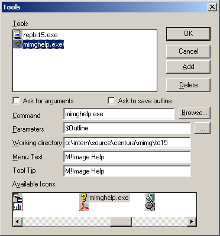
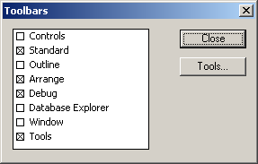
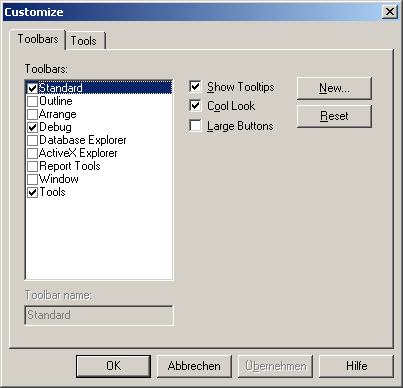

Help Launcher
Help launcher
M!Image provides a help launcher which displays the M!Image help for the currently selected keyword.
The following M!Image items are registered keywords:
- Functions
- Classes
- Constants
IDE integration
The IDE integration is done by the Team Developer's Tools interface.
Step 1: Build mtblhelp.exe
- Open mimghelp.app which is located in the folder corresponding to your Team Developer version and build an executable ( mimghelp.exe ).
For example, if you're using Team Developer 3.1, open mimghelp.app from the folder <folder where you've extracted M!Image>\MImg\TD31. - Copy mimghelp.exe to the location where where mimg.chm and keyhh.exe reside.
By default, you'll find these files in the folder <folder where you've extracted M!Image>\MImg\Help.
Step 2: Create a tool for the help launcher
- Open the tool editor ( menu item "User tools" or "Tools" ( depending on the TD version ) in the menu "Tools" ).
- Click the [Add] button.
- Type mimghelp.exe into the field "Command".
- Type $Outline into the field "Parameters".
If you're using TD 3.1 or higher, you have to type -MTX $Outline. - Type the directory where mimg.chm and keyhh.exe reside into the field "Working directory".
By default, you'll find these files in the folder <folder where you've extracted M!Image>\MImg\Help. - Type something into the field "Menu Text", e.g. M!Image Help.
- Type something into the field "Tool Tip", e.g. M!Image Help.
- Choose an icon you like form the list "Available Icons".
- Click the [Ok] button.

Fig. 1.1: Creating a tool for the help launcher( TD 1.5 )
Step 3: Display the toolbar "Tools"
- Open the toolbars dialog ( menu item "Toolbars" in the menu "Tools" )
- Check the entry "Tools" in the list of the available toolbars
- Click the button [Close] or [Ok] ( depending on the TD version )
|
 Fig. 2.1: Displaying the toolbar "Tools" ( TD 1.5 ) |
 Fig. 2.2: Displaying the toolbar "Tools" ( TD 3.1 ) |
Step 4: Use it!
- Select any M!Image related keyword in the outline.
- Press the M!Image help button in the toolbar "Tools" to show the help for the selected keyword.
IntelliSal integration
If you're using IntelliSal, the M!Image Help can be integrated by an entry in intelli.ini, e.g.:
[EXTERNALHELP]
HELP1=MImg#<Path to mimg.chm>\mimg.chm#html
Created with the Personal Edition of HelpNDoc: Write eBooks for the Kindle